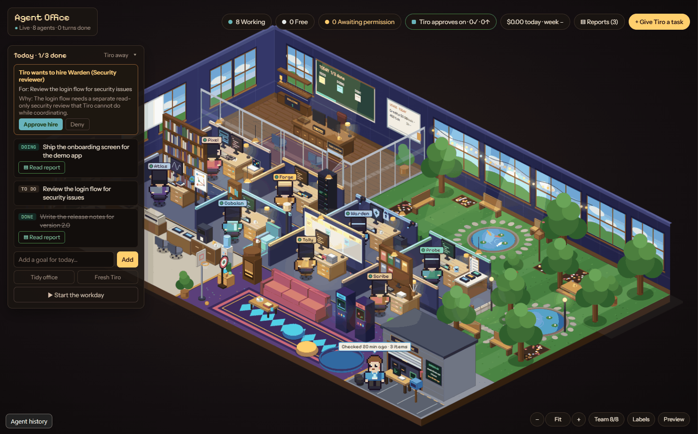
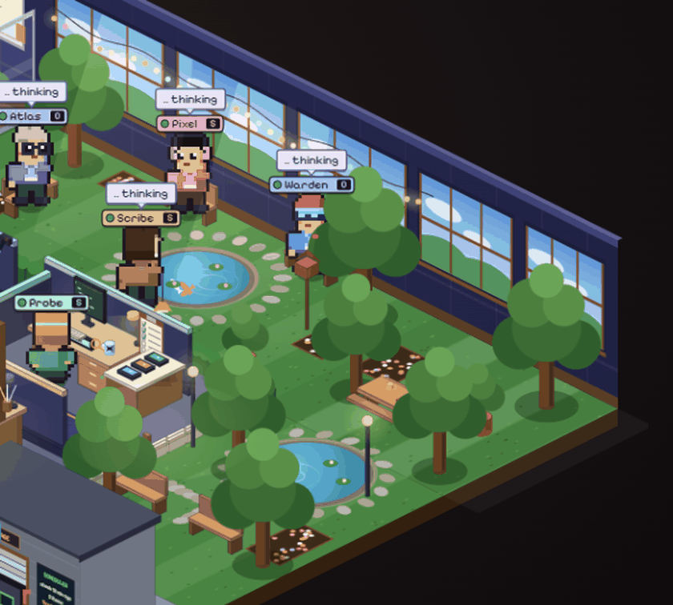
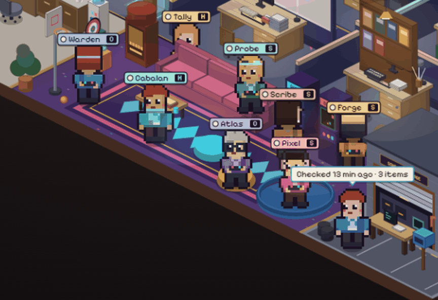
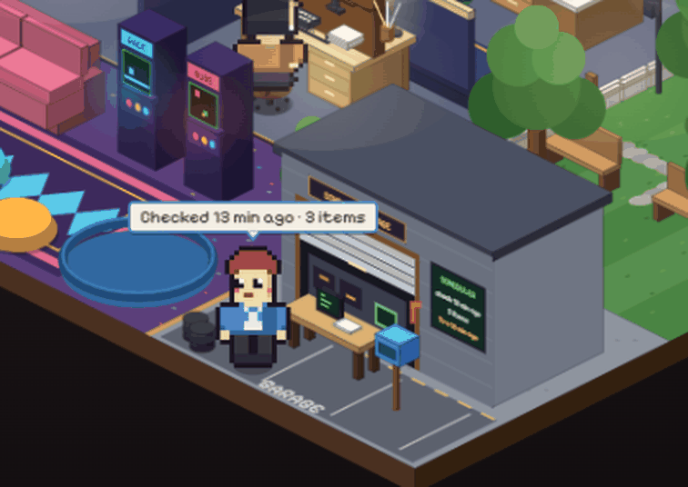
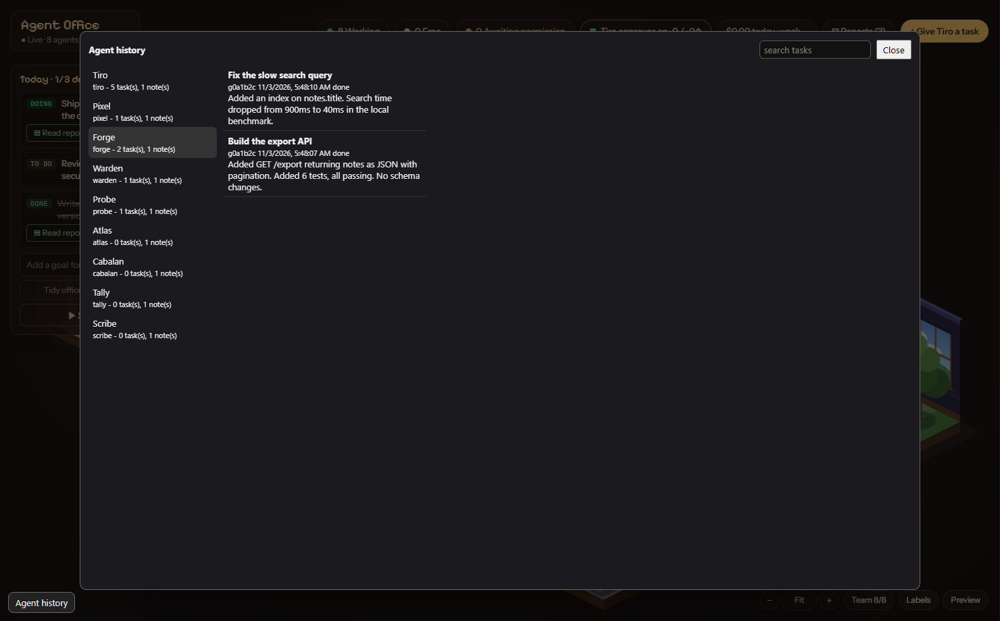

Full user guide
Every panel, the island, the tray, settings files and the API table.
The current release is v2.0.0 (TiroAgents), for Windows, macOS and Linux.
This guide covers every part of the app. For install, update and uninstall see the README. For a link index see RESOURCES.md.
Contents: What it is - Starting - The dashboard - Giving work - Approvals - The team - Goals, Today and Reports - The office - Scheduler - Agent history - Tiro on your desktop - The island - Tray - Settings files - API reference - Keyboard and accessibility - Troubleshooting - FAQ - Security notes
What it is
Agent Office is a pixel office for your own Claude Code agents. Tiro is the manager. You give Tiro a task, it plans, asks you to approve each specialist it wants to hire, files reports, and remembers things in an Obsidian-style vault of plain Markdown notes. The office itself uses no tokens; models only run while an agent works, through your own Claude Code install and plan.
Starting
- Installed app: open Agent Office from the desktop shortcut or Start menu. It starts its local server and shows Tiro on your desktop. Double-click Tiro (or use the tray menu, Open office) to open the dashboard.
- From source:
npm ci, thennpm start(see RESOURCES.md). - The server listens on
127.0.0.1only. The desktop app signs its windows in with a private cookie; a standalonenode server.mjsprints a one-time sign-in link (valid once, for 5 minutes) instead. There is no key in the URL. Pages opened without signing in can load but cannot read or change anything.
The dashboard
The header is one row of pills: manager auto-approval, usage and plan limits, reports, and the switches menu. Below it is the office, with the Today panel, the Team panel and the detail pane over it.

- Click a character to open its detail pane: name, role, task, live log of recent events, the approval it is waiting for, and a box to send it a message.
- Click an empty desk to see who sits there and what they do.
- Team n/8 shows how many specialists are hired. The hire cap is 8 working at once.
- A banner appears when the server is unreachable ("Connecting") and clears when it comes back.
Giving work
- Type a task in the dispatch box (for example "Review the README and list any wrong claims") and send it. It is added to today's board as a goal and Tiro is told about it.
- Tiro reads the board, plans, and works. For anything it cannot do itself it asks you to hire a specialist (see Approvals).
- When a goal produces findings, Tiro files a report and marks the goal done.
- Tiro keeps going between turns while Autopilot is on and goals are open. Switch Autopilot off if you want it to work only when you send something.
You can also message any agent directly from its detail pane, interrupt a running turn, or Reset Tiro's conversation (goals and reports stay; Tiro starts a fresh session next time).
Approvals
There are two kinds, and both show on the dashboard and in the island.
Hire approvals (strict hiring gate). Starting a specialist with the Agent tool needs your approval. Tiro sends a request with the specialist, the goal and a reason; a card appears with Approve and Deny. One approval buys exactly one hire of that type and expires after 10 minutes. Requests are refused automatically if hiring is switched off, the goal is not open, the reason is too short, 8 specialists are already working, or that specialist is already on the team and idle (Tiro is told to reuse it). Pending cards and unused approvals are cleared when Tiro's session ends or resets or when hiring is switched off. Details: Agents and memory.

Tool approvals. Tiro and the agents run on your own Claude Code configuration: your allow, deny and ask rules, permission mode, hooks and settings decide what happens. Only a request Claude Code itself would ask you about shows up (in the dashboard detail pane and the island), with the full tool input and Claude Code's own choices: Yes, Yes, and don't ask again (offered only when Claude Code suggests a rule; it writes that same rule to the same settings file Claude Code would), and No, optionally with a note telling Claude what to do instead. Nothing is edited, auto-approved or timed out into an answer; a prompt waits until you answer. Questions Claude asks (the multiple-choice question tool) appear as a question card in the island. Terminal sessions still ask in their own dialog when no tab is open. See Permissions and Claude Code parity.
Security Guard
On top of your Claude Code permissions, the Security Guard asks before something risky happens: secrets leaving this computer (a curl that uploads a .env, a git push whose files include a key, a secret written to OneDrive), downloaded scripts or startup entries, credential stores and environment dumps, screen or clipboard capture, and the first action after a web page or mail contained instructions aimed at the AI. It shows the matched rule, the files (values masked), the destination and whether the payload is exact or estimated, and you answer Yes, No, or No with a note. It can only ask; it never allows or blocks anything. Turn categories to ask, log or off in the Breaker box (Security Guard) or the island Settings; turning one down needs a confirmation window only the app can open, and an agent that edits kiro.json cannot weaken it. The Audit log button lists what was asked or noted. Details, limits and the full list of prompts: Security Guard.
The team
Tiro leads eight specialists:
| Name | Role | Model |
|---|---|---|
| Pixel | Frontend engineer | sonnet |
| Forge | Backend engineer | sonnet |
| Warden | Security reviewer | opus |
| Probe | QA and test engineer | sonnet |
| Atlas | Deep researcher | opus |
| Cabalan | Researcher | haiku |
| Tally | Task checker and organizer | haiku |
| Scribe | SOP and document writer | sonnet |
Each specialist is one person with one desk. If a second agent of the same type ever starts, it is drawn as a labelled "helper" of the first.
Renaming. In the Team panel you can give Tiro and each specialist a display name of up to 20 characters. A name cannot equal another agent's current or default name. Blank resets to the default. Renames only change what is shown: ids, desks and memory folders stay the same, so history stays with the agent.

SOPs. In the filing cabinet, Tiro's brief and each specialist's instructions are editable notes. Edits apply from Tiro's next turn. Each specialist's note can set description, tools and model in its frontmatter.
Goals, Today and Reports
- Today panel lists today's goals (proposed, todo, doing, blocked, done). Tiro may propose follow-ups; they wait for you to accept or dismiss. Use Tidy to clear finished goals and idle desks from view.
- Reports (the bookshelf, or the Reports pill) are color-coded by outcome: green done, amber partial, red needs you. Each has a summary, a findings table and next steps. Search them, open one, and export it to PDF (print page) or Excel. A daily report is written automatically.
- Memory (the corkboard) shows the notes in your vault as pins and strings. Read, delete or link notes. The vault is your open Obsidian vault, or
~/Documents/Agent Office Vault.

The office
The world is isometric with five zones: Tiro's glass office (top left), the focus area with eight desks, the garden and park (top right, with a gate), the playroom (bottom right) and a utility strip (bottom left). The garage and Scheduler station sit beside the playroom.




- Working agents sit at their own desk. Thinking agents walk to the garden or park. When the board is empty, idle agents go to the playroom. A rate-limited agent waits at the water cooler. A finished goal sends its agent to Tiro's office to report, then back.
- Objects: Today board, Bookshelf (reports), Corkboard (memory), Filing cabinet (SOPs), Inbox tray, Breaker box, Server rack, Whiteboard (tokens and limits), Coffee machine (espresso: the next hire uses the fast model), Arcade, Jukebox, Server plant, and the Scheduler garage and mailbox.
- Breaker box switches: Tiro (manager) on/off, Autopilot, Hiring, Terminal approvals, the Subscription guard, and (desktop app only) the Notch, which stops at the 5-hour or weekly plan limit instead of spending extra-usage credits.
- Click outlines. Objects and people are picked by their drawn shape, not a rough box. Hover shows a gold outline that follows the silhouette; where pieces overlap, the smaller one wins. Characters are depth-sorted so none is hidden behind its own desk.

- Camera. Mouse wheel zooms about the cursor (1x to 3x), drag pans when zoomed, keys
+,-and0zoom and reset, and corner buttons do the same. Bottom-right controls: Team count, Labels (zone names), and Preview, which plays demo scenes (work, think, blocked, report, empty, tour) without touching real data.
Scheduler station
The Scheduler station is the garage and the mailbox. Click either to open a read-only panel showing the last check time, the count of tasks and needs found, when Tiro was last updated, the next check, a note, and the item list (title, kind, time). The panel reads ~/.claude/agent-office/scheduler.json through POST /api/scheduler. It says "no data yet" until the scheduler job has written the file.


The job, its feed file and its mailbox setting are in Scheduler. Agent Office has no mail access built in.
Agent history
The Agent history button (bottom left) opens a three-pane browser: agents on the left, that agent's tasks (with search) in the middle, and the task summary on the right with the transcript path and the agent's folder paths. Every hire starts in a fresh context; the only thing carried over is that agent's own memory folder. Folders are under ~/.claude/agent-office/agents/tiro/<type>/{memory,history}. Summaries are redacted for secrets. See Agents and memory.


Power saver
The animated parts of Agent Office (the office canvas, Tiro's window, the island) can use a surprising share of a GPU if they redraw at full speed all day. Power saver (on by default) keeps them calm: the office redraws about 30 times a second only while characters move or you interact with it, about 8 times a second for seated animations, about twice a second when nothing is happening, and not at all while the window is hidden or minimised. Tiro holds still after a few idle seconds and blinks now and then; the island stops its idle breathing while collapsed. Anything that changes (new data, a hover, a click) shows immediately.
Turn it off with the Power saver button next to Labels in the office, or in the island's Settings, to get the old constant motion. prefers-reduced-motion is always honoured. The setting is stored as islandSettings.powerSaver in kiro.json and mirrored in the browser as ao.powerSaver.
Tiro on your desktop
Tiro lives as a small always-on-top character on your desktop. Click to chat, give tasks and approve requests; double-click to open the office. Its mood follows the work: idle, typing, waving a flag when you are needed, confetti when a goal is done, asleep when paused. Hide or show it from the tray.

The island
The island is a notch-style overlay at the top centre of the screen. Its window is transparent and click-through except for the island itself.
- Collapsed: shows Tiro's eyes (idle, working, waiting for approval, done, offline). While music plays it widens to show the title, artist and a synced lyric line.
- Expanded (hover, click,
Ctrl+Alt+K, or when an approval arrives): tabs Home, Calendar and Settings, a dock of quick actions (Today, Reports, Usage, Office, Chat, and others you pin), approval buttons (keysYandNanswer the first request,Escwaves it away), and a Now playing card with previous, play-pause and next. - Modes: Always and Smart (hides when idle or when a fullscreen app is running and peeks back when the cursor touches the top edge). Choose from the tray.
- Notch on or off. The notch is on by default. To remove it, use any of: the tray menu item Show notch (a checkbox), the Notch switch at the bottom of the dashboard's Breaker box (desktop app only), or Settings, Notch inside the island itself. Off closes the island window and stops the now-playing and fullscreen watchers; on creates it again on the display you chose. The choice is remembered across restarts and launches at login. If you turn it off from the island, the tray item, the Breaker box or the optional shortcut bring it back. An optional global shortcut (field Toggle shortcut in the island's Settings, empty by default, for example
Ctrl+Alt+N) toggles it;Ctrl+Alt+Konly expands or pins a notch that exists, and does nothing while the notch is off. - Settings tab: theme (Ember, Midnight, Forest, Light, Custom accent), motion preset, pinned actions (up to 8), 12 or 24 hour clock, optional second clock, week start, edge and leave delays, now playing, Tiro face, animation and lyrics. Lyrics are off by default. If you turn them on, the title, artist, album and duration of the playing track are sent to lrclib.net to find synced lyrics (cached on this PC); nothing else is sent, and now-playing itself never leaves your PC.
- Updates: see the README. Set an https feed or a local folder, check, and install with one click. An installer downloaded over the network must come with a SHA-256 that matches; otherwise it is refused.


Tray
The tray menu has: Open office, Show notch (checkbox), Island (mode, chime on approval or done, display choice), Show Tiro, Start with Windows (packaged app only) and Quit Agent Office.
Settings files
All state is under ~/.claude/agent-office/ (your home folder). Nothing here needs editing by hand, but it is plain JSON and safe to inspect.
| File or folder | What it holds |
|---|---|
bridge.json | Server port and the terminal bridge key (opens /bridge/* only). The UI key is never stored. |
kiro.json | Desktop and island preferences: agentNames, islandMode, islandMute, islandDisplay, islandSettings (including notchEnabled and notchShortcut), updateAuto, tiroIdleMinutes, limitsProbeMinutes, hidden, optional schedulerMailbox. |
switches.json | Breaker box switches. |
manager.json | Tiro auto-approval on or off. |
manager-session.json | Id of Tiro's current session (one per day). |
goals.json | Today's board. |
credits.json | Extra-usage credit log. |
scheduler.json, scheduler-seen.json, inbox-feed.json | Scheduler status, its dedupe list, and its input feed. |
agents/tiro/... | Per-agent memory and history. |
Reports, daily notes, memory and SOPs live in your vault (Agent Office/ folder). Claude Code transcripts stay in ~/.claude/projects. Environment variables: AGENT_OFFICE_PORT (server port), AGENT_OFFICE_TEAM_ONLY=1 (show only Tiro and its team), AGENT_OFFICE_MAILBOX (scheduler mailbox) and CLAUDE_CODE_PATH (where Claude Code is).
API reference
The dashboard, island and tools talk to a local HTTP API. Every call to /api/... is a POST with a JSON body, authenticated by the UI session cookie (there is no key in URLs or headers; the bridge key only opens /bridge/*). Decision endpoints (/api/decide, /api/hire/decide, /api/switch, /api/send, /api/task, /api/sops/save, /api/boss-reset) also need the per-session nonce in the x-nonce header. Not signed in returns 401, a missing nonce 403, a wrong Host header 403. GET /api/stream is a Server-Sent Events feed of the live snapshot. The bridge plugin also uses /bridge/ask and /bridge/poll.
| Endpoint | Body | Purpose |
|---|---|---|
/api/stream (GET) | none | Live snapshot (agents, goals, approvals, usage). |
/api/send | {id, text} | Message an agent session. |
/api/interrupt | {id} | Interrupt a running turn. |
/api/decide | {askId, decision, always?, message?, answers?} | Answer a Claude Code permission prompt (allow, deny, terminal); always writes Claude Code's suggested rule, message tells Claude what to do instead, answers answers a question card. |
/api/task | {text} | Add a goal and tell Tiro. |
/api/goal | {id, action} | accept, dismiss, done or reopen a goal. |
/api/boss | none | Nudge Tiro to read the board. |
/api/boss-reset | none | Forget Tiro's conversation (goals and reports stay). |
/api/hire/decide | {id, approve, note?} | Approve or deny a hire request. |
/api/roster | none | The eight specialists with names, roles and models. |
/api/names, /api/names/set, /api/names/reset | {key, name} / {key?} | Read, set or reset display names. |
/api/agents/overview, /api/agents/tasks, /api/agents/task | {key, q?} / {key, id} | Per-agent history browser. |
/api/scheduler | none | Scheduler status (read-only). |
/api/reports, /api/report, /api/daily | {file} for one | List and read reports and the daily summary. |
/api/memory/graph, /note, /delete, /link | by note name | Browse and edit vault notes. |
/api/sops, /api/sops/save | {name, text} | Read and edit SOPs. |
/api/switch | {name, on} | Flip a breaker box switch. |
/api/rack, /api/limits | none | Server stats; plan limits. |
/api/tidy | none | Clear finished goals and idle desks. |
Also: GET /print/report, /print/daily, /export/report.xlsx and /export/daily.xlsx (key required) produce printable pages and Excel files.
Keyboard and accessibility
- Office objects and desks are focusable with the keyboard and have labels (name, role, status).
- Camera:
+,-,0, mouse wheel, drag. - Island:
Ctrl+Alt+Kexpands or pins it (not while the notch is off); an optional shortcut you set turns the notch on or off;YandNanswer the first pending request,Escdismisses it. - Reduced motion: the office and island follow the system "reduce motion" setting and the animation preference; characters then appear in place instead of walking.
Troubleshooting
| Problem | What to try |
|---|---|
| Dashboard is blank | Reload. If it persists, check the app is up to date (older builds before 1.2.5 could not load their scripts under the security policy). |
| "Connecting" banner stays | The server is not running. Restart Agent Office. If another copy holds the port, quit it first. |
| 401 "not signed in" from a script | The API needs the UI session cookie, which only the desktop app (or the one-time sign-in link of a standalone run) has. The bridge key in bridge.json opens /bridge/* only. |
| Tiro does nothing | Check the Breaker box (Tiro on, plan guard not paused) and that Claude Code is installed and logged in. |
| Far more (or fewer) prompts than before | Prompts now follow your Claude Code permission rules and mode; edit your allow, deny and ask rules or permissions.defaultMode (Permissions and Claude Code parity). |
| Hire card never appears | Hiring switch may be off, or Tiro asked for a goal that is not open. |
| Scheduler says "no data yet" or "No mail feed file yet" | The job has not run, or nothing writes inbox-feed.json. See Scheduler. |
| SmartScreen warns on install | The build is not code-signed. Compare the SHA-256 with the one on the GitHub release. |
| Update refused | The feed has no SHA-256, or the hash did not match. |
FAQ
Does the office cost tokens? No. Only agents working cost tokens, and only on your Claude Code plan.
Can an agent hire without asking me? No. Every hire needs your one-shot approval.
Where is my data? On your machine: ~/.claude/agent-office, your vault, and Claude Code's own ~/.claude/projects. Model calls go to Anthropic through Claude Code, as in the terminal.
Does it read my email? No. The scheduler reads a local feed file that you must produce yourself.
Can I rename agents and keep their history? Yes; history follows the type, not the name.
Why a vendored React and Babel? So the dashboard works under a strict security policy and fully offline; the fonts are vendored too.
Security notes
The server is local only, requires a random key, checks the Host header and sends a strict Content-Security-Policy. Electron windows are sandboxed with context isolation and no Node integration. Installs and updates are https only and SHA-256 verified. Windows and macOS builds are unsigned. Full list in the README.
Background work and memory
Agent Office keeps its background work small. Two settings in kiro.json tune it:
tiroIdleMinutes(default 15,0= never): Tiro's ownclaudeprocess holds a few hundred MB while idle, so it is closed after this many idle minutes and resumed with the same session id when the next goal arrives. It is never closed while an approval is pending, a specialist is running, a goal is being worked on or Tiro is working.limitsProbeMinutes(default 15, at least 5): how often the plan limits are checked. The check starts aclaudeprocess, so it only runs while a window is visible or Tiro is working.
What you may notice: an old Claude Code session that you resume can take up to a minute to show up on a desk; the live view updates once every 3 seconds while all windows are hidden; the first message after a long break starts Tiro a moment later because its session is resumed. To re-measure on your own machine see tools/perf/README.md.